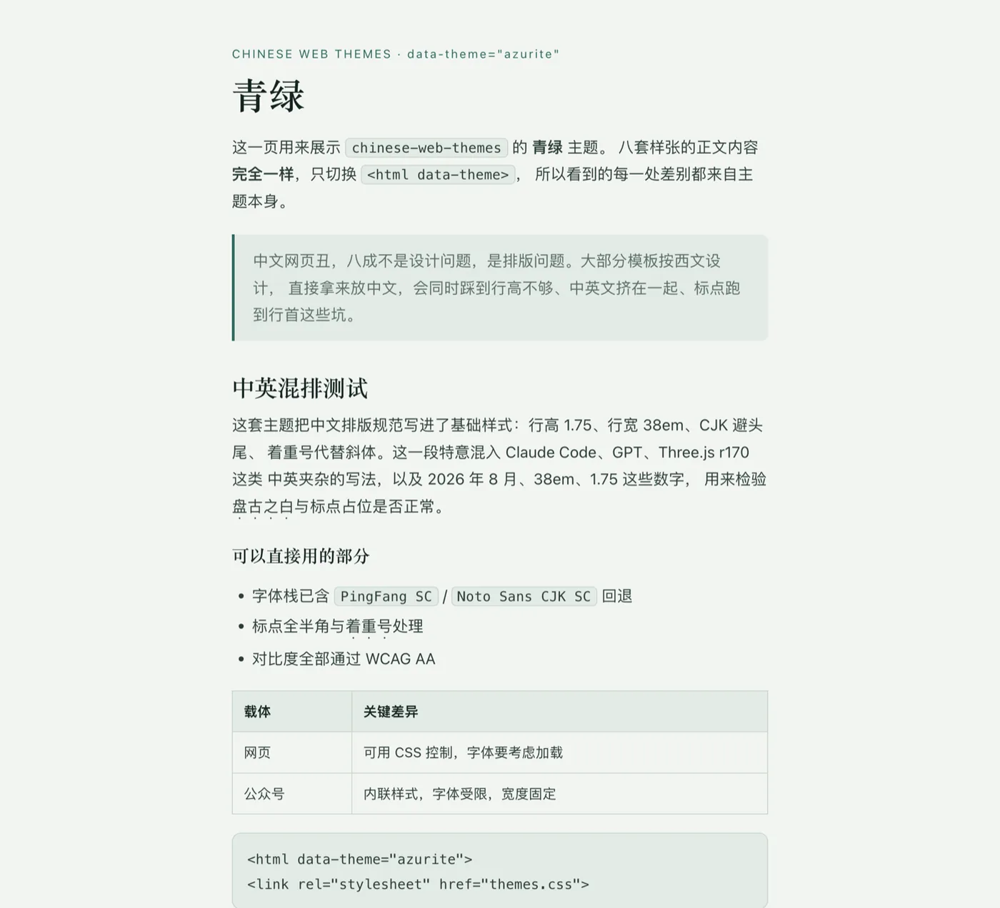
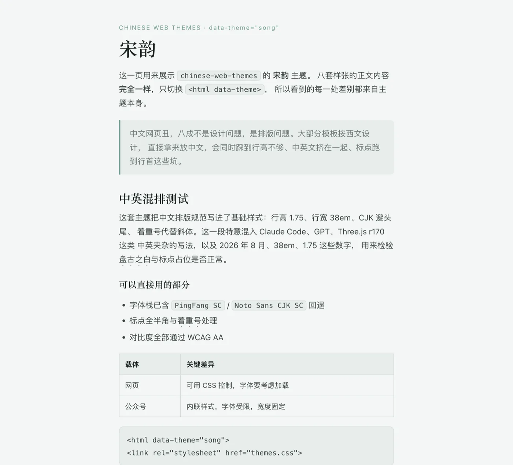
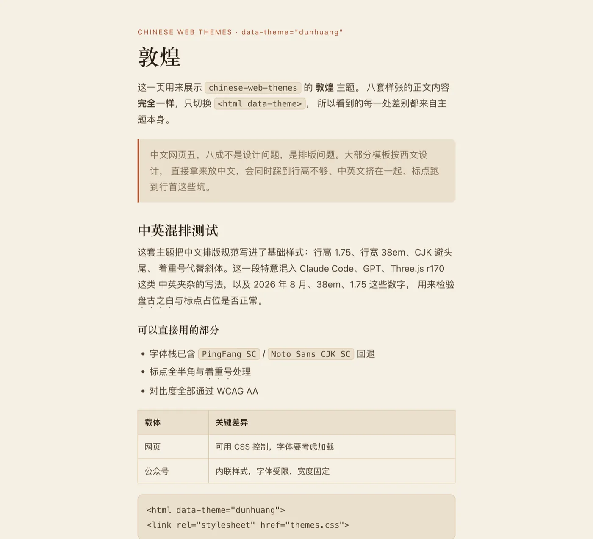
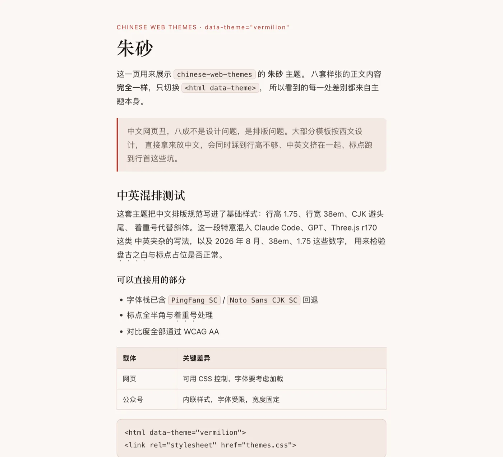
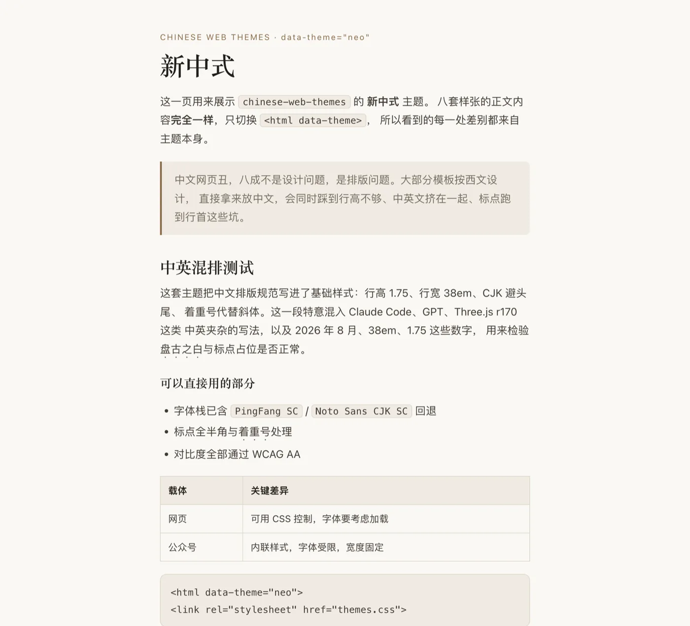
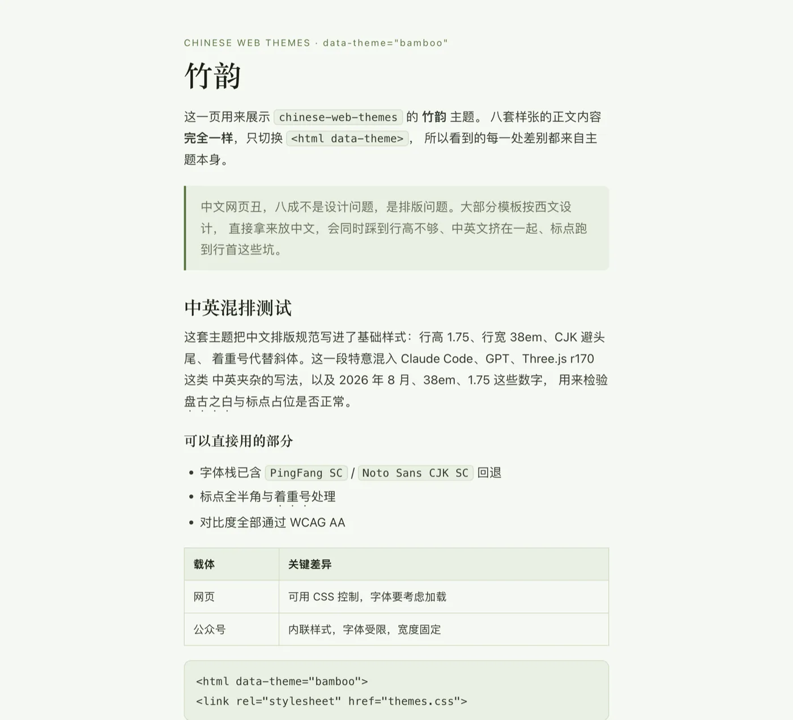
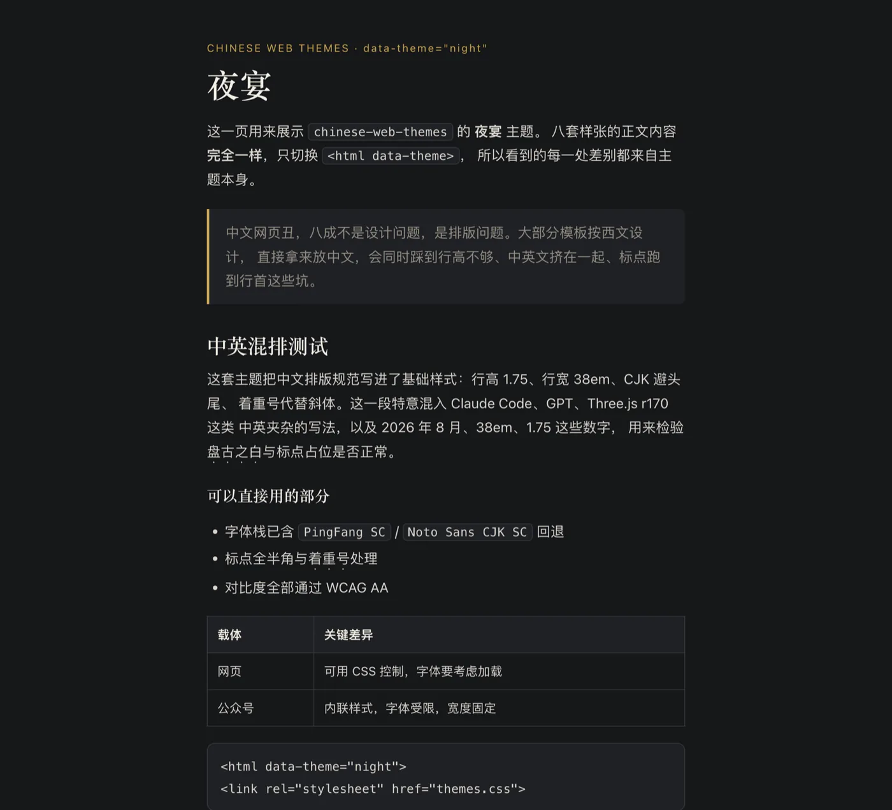
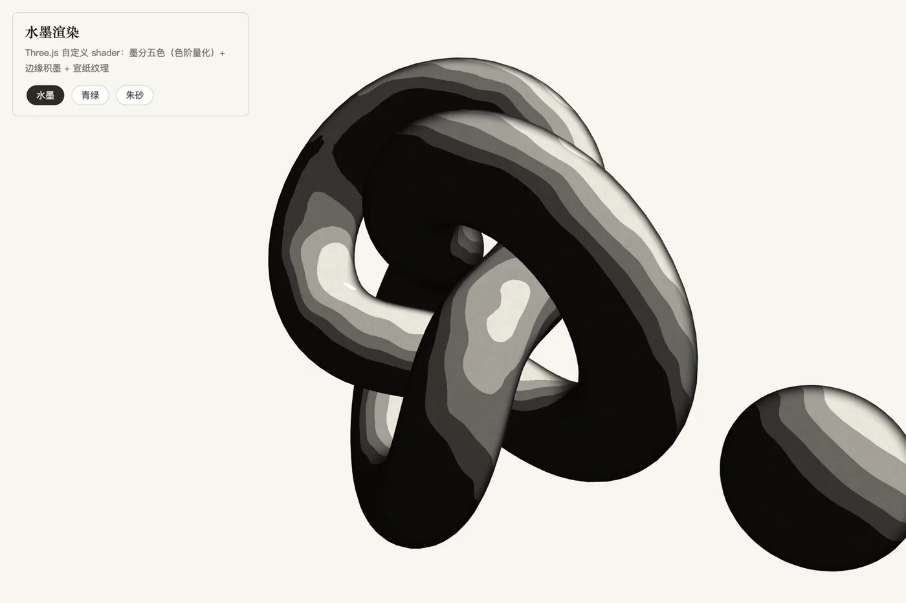
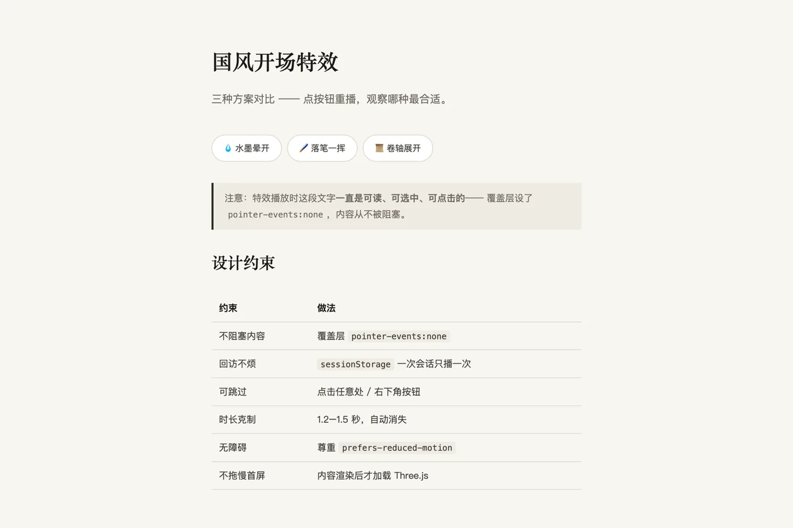

这一页的每张图都是 headless Chrome 实跑生成的，不是示意图、不是设计稿。 你可以自己打开源文件复现。
八张样张的 HTML 内容完全相同，只切换 <html data-theme="…">，
所以看到的每一处差别都来自主题本身。点图看大图。
data-theme="ink"
data-theme="azurite"
data-theme="song"
data-theme="dunhuang"
data-theme="vermilion"
data-theme="neo"
data-theme="bamboo"
data-theme="night"Three.js 自定义 GLSL：墨分五色（色阶量化）+ 边缘积墨 + 笔触扰动。 下面是 WebGL 的真实渲染输出。

skills/guofeng-threejs/demo.html
skills/guofeng-threejs/intro-demo.html